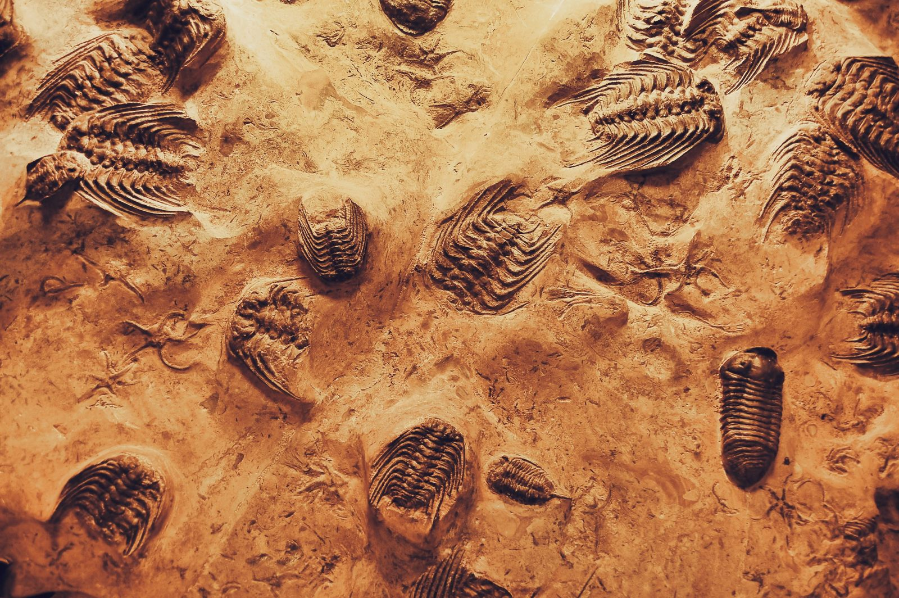

About the preparator
Sixteen years of taking rock off bone. Slowly, on the record, and with a written refusal where the science requires one.
I came to the bench the way most Lyme Regis preparators do — from the beach up. A geology degree, winters collecting under the cliffs with the local society, then a museum prep lab apprenticeship where I learned the trade's first rule: you can always take more rock off; you can never put it back. Six years in museum laboratories, ten since at my own bench here, preparing for the institutions I used to work for and for the collectors whose specimens will one day join them.
The bench specialises in marine reptiles and fish of the Lias, but the column on the home page is the honest CV: shale to ironstone, Cambrian trilobites to Quaternary cave bone, the work is the same discipline at different speeds. Every specimen is photographed and logged at each stage, and the log belongs to the specimen — it transfers with it, to whoever holds it next.
What I am not: a dealer. I do not buy, sell or broker fossils, and I do not prepare specimens whose destination is a sale that would take scientifically significant material out of reach of research. That policy is written out in full below, because a policy nobody can read is just a mood.

Tools & methods
HOW IT'S DONE- Air scribesPneumatic pens with carbide styli do the bulk work — a jackhammer the size of a pen, chipping matrix a fraction of a millimetre at a time. Tip size and air pressure are matched to the rock; the rates in the estimator are scribe rates, measured on this bench.
- Needles & pin vicesThe last millimetre is hand work: a needle in a pin vice, under a binocular microscope, for skull sutures, teeth and fin rays. This is the slowest stage and the one that decides what a specimen can tell a researcher.
- Air abrasionA gentle blast of fine powder (sodium bicarbonate for delicate bone, harder media for robust matrix) cleans surfaces a needle would score. Used selectively, never as a shortcut across detail.
- ConsolidationParaloid B-72 in acetone — the conservation standard — wicked into fragile bone before, during and after prep. It is reversible, documented in the log at the concentration used, and chosen because a future preparator can undo my work. Gap fills use the same resin, toned, and are always distinguishable from original bone under UV.
- Acid preparationWeak acetic or formic acid dissolves limestone from bone for some fish and microvertebrate work. It is powerful and unforgiving: used only after test pieces, never on pyritised material, and declined where surface detail matters more than speed — see Case 01.
- DocumentationPhotographed at arrival, at every stage change, and at completion; hours logged to the quarter hour; every consolidant, fill and decision recorded. The log is delivered with the specimen and a copy retained here.
Ethics & the law, in print
Ownership. In the UK a fossil belongs to the landowner of the ground it came from — not to the finder. I work only on specimens with the landowner's permission established, and I ask for it in writing before a jacket is opened.
Significant specimens. Scientifically important finds — new species, exceptional preservation, first records for a locality — belong where researchers can reach them. I report such finds to the relevant museum, and I decline preparation work whose purpose is a commercial sale that would remove a significant specimen from science. Ordinary, well-documented material for private collections is welcome; the line is significance, and I will tell you plainly which side of it a specimen falls on.
Locality data. A specimen without its locality is a specimen with its science halved — so locality is recorded in full in the log. But exact localities of vulnerable, unprotected sites are not published by me, in print or online; they pass with the specimen's documentation, not with its publicity.
Export. Fossils are not “treasure” under the Treasure Act 1996, but significant specimens can require an export licence before they leave the UK. I check before anything is shipped abroad, and the paperwork is part of the job, not an afterthought.
Collecting conduct. Fieldwork here follows the coast's codes: no digging into cliffs in situ, no hammering of protected sections, nothing taken from SSSI foreshore beyond what the relevant consent allows. Loose, already-fallen material is the honest harvest.
How an engagement runs
IN WRITING- 1 · Photographs firstSend photographs and the rock description before posting anything. Most enquiries are answered — identified, advised on, or declined — at this stage, free of obligation.
- 2 · Assessment — £120, creditedThe specimen is examined under the microscope and you receive a written plan: stages, hours band, price band, and the risks stated plainly. The fee is credited in full if the work proceeds.
- 3 · Deposit & queuePreparation over £1,000 is booked with a 40% deposit. Your specimen joins the queue at the date quoted — currently 6 weeks out — and the queue is worked in order.
- 4 · The work, loggedHours are logged to the quarter hour and the stage photographs are yours on request at any point. If the rock surprises us — it does — work stops and the plan is re-agreed before hours accumulate.
- 5 · Completion & aftercareFinal photographs, the full prep log, and aftercare instructions (humidity limits for pyrite; handling and mount notes) are delivered with the specimen. Balance is due on completion.
- Insurance & transitSpecimens in the workshop are covered while on the premises. In transit they travel at the owner's insured risk — I will advise on packing and couriers, and I pack returns to the standard I would want receiving them.
- TurnaroundQuoted per job from the assessment, in weeks, with the queue position stated. A single ammonite is typically 2–4 weeks in the queue and days on the bench; a jacketed vertebrate is a season, and anyone who tells you otherwise is guessing.
- FieldworkSite assessments are booked by the season at £520/day plus travel, with the written report included. Watching briefs and quarry agreements are annual, reviewed each year.
- RefusalsNo landowner permission, no work. Significant specimen bound for a science-losing sale, no work. A deadline that can only be met by rushing a scribe — declined, with the reason given. Refusals are free and are given in writing.